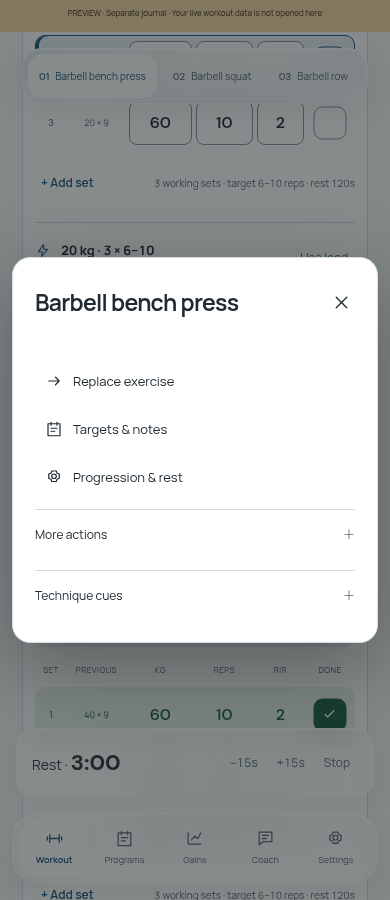

Updated: clear optical glass without the frosted blur
YOUR REQUESTED REFINEMENT
Aero stays.
The glass gets clearer.
The same mineral blue, neutral graphite, typography and layout. Clear glass lets more of the workout show through navigation and floating controls, with less frosting than Expressive.
ACTUAL APP CAPTURES
More of the workout. The same Aero.
Each pair uses the same synthetic workout, scroll position and saved sets. Expressive uses 66% fill and 24px blur; Clear uses 28% light / 34% dark fill and 16px blur.
SELECTIVE TRANSPARENCY
Clear controls.
Readable training.
Glass stays on the navigation, exercise jump bar, rest timer and existing dialog headers. Workout cards and numeric fields keep their solid backing.
Photo backgrounds, short screens and reduced-transparency preferences use readable solid controls. Unsupported backdrop filtering retains the existing solid fallback. No animated backdrop or extra runtime layer is added.
EXERCISE OPTIONS
The option dialog keeps its opaque content panel and familiar Aero layout.

